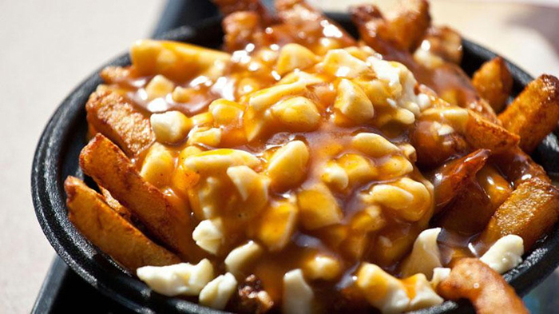
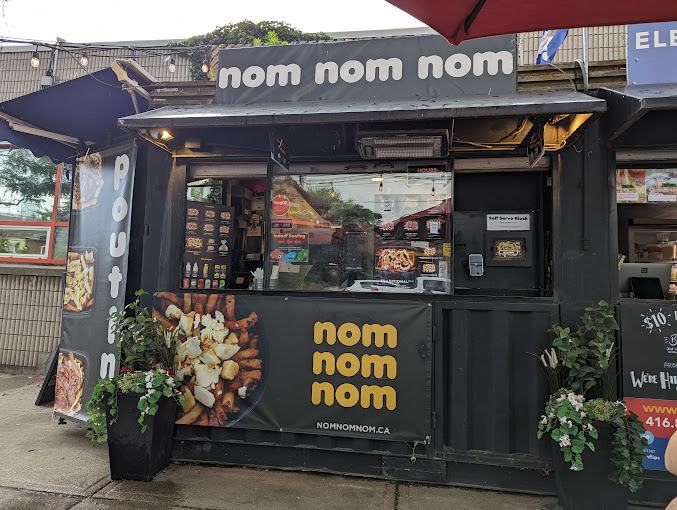
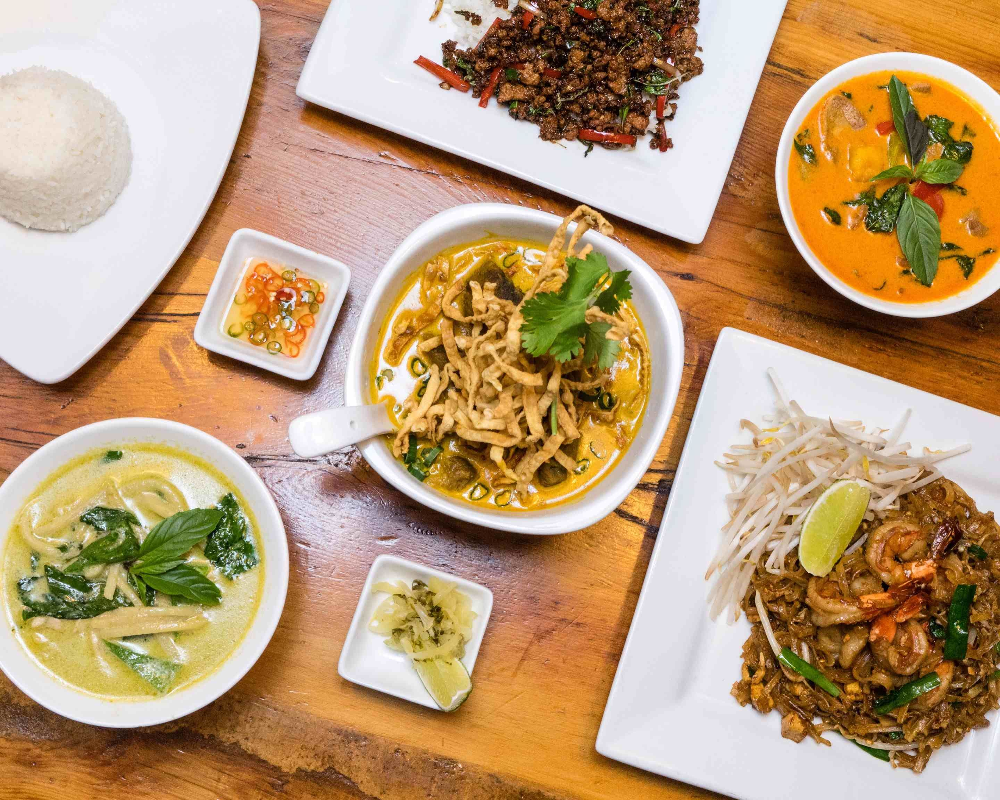
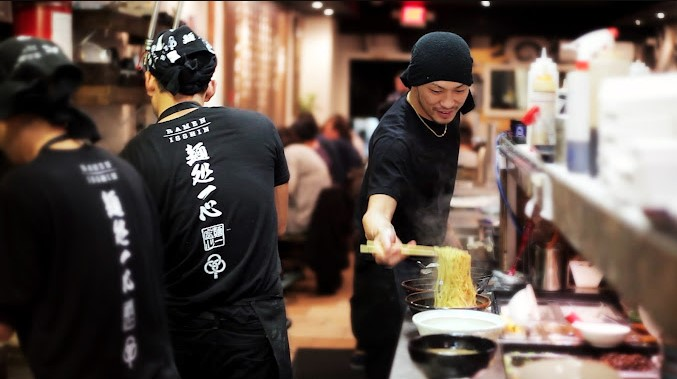
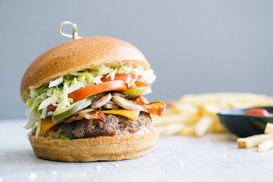
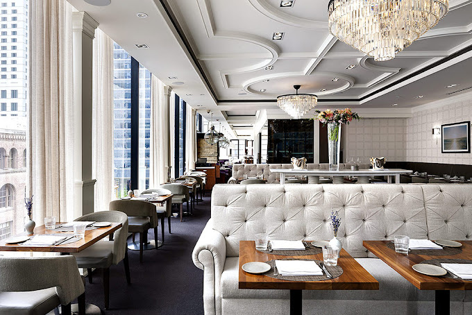

Nói đến ẩm thực Canada thì không thể không nhắc đến món Poutine đặc sản. Poutine là một món ăn nổi tiếng của Canada, nếu không muốn nói là món ăn quốc dân của đất nước lá phong đỏ, bao gồm các thành phần chính là khoai tây chiên (French fries), nước sốt thịt (gravy) và phô mai (cheese curds).

1. NomNomNom Poutine
- NomNomNom Poutine ở Toronto là một điểm đến tuyệt vời cho những ai yêu thích món Poutine. Món ăn ở đây ngon và béo ngậy với khoai tây chiên giòn, phô mai chảy và sốt hảo hạng. Không gian thoải mái và giá cả hợp lý.
- Nếu bạn đến NomNomNom Poutine ở Toronto, món ngon nhất mà bạn không nên bỏ lỡ là "Classic Poutine." Classic Poutine bao gồm khoai tây chiên giòn, sốt hảo hạng và phô mai chảy, tạo nên sự kết hợp hoàn hảo giữa mềm mịn và ngon miệng.
- Món ăn này là biểu tượng của ẩm thực Canada và NomNomNom Poutine thường làm rất ngon và đậm đà. Nếu bạn chưa từng thử Poutine trước đây hãy bắt đầu bằng Classic Poutine tại đây để trải nghiệm hương vị đặc trưng của Canada.

2. Khao San Road
- Khao San Road ở Toronto là một điểm đến tuyệt vời cho những người yêu thích ẩm thực Thái Lan.
- Không gian thoải mái và phục vụ tận tình. Giá cả hợp lý và đáng đồng tiền bát gạo.
- Pad Thai tại đây thường bao gồm mì xào với gia vị hương vị độc đáo, hỗn hợp rau sống, tương ớt và chất dinh dưỡng như tôm hoặc gà, tạo nên một hương vị ngon và phong cách Thái truyền thống. Đây là một món ăn không thể bỏ lỡ khi bạn đến Khao San Road.

3. Ramen Isshin
- Ramen Isshin ở Toronto nổi bật với món "Red Miso Ramen" của họ. Món ăn này thú vị bởi hương vị đậm đà và cay nồng của nước dùng miso đỏ kết hợp với mì ramen mềm mịn, thịt lợn nướng, trứng luộc và rất nhiều topping ngon. Điều đặc biệt là nước dùng miso đỏ tại đây có hương vị cay cay độc đáo, tạo nên một trải nghiệm ẩm thực độc đáo.
- Ramen Isshin chú trọng đến chất lượng và hương vị của món ăn. Họ luôn luôn sử dụng nguyên liệu tươi ngon và kỹ thuật nấu ăn chuyên nghiệp. Thực đơn đa dạng và phong phú, phù hợp với nhiều sở thích ẩm thực.

4. Cactus Club Cafe
- Món ngon nhất tại Cactus Club Cafe mà tôi yêu thích là "The Feenie Burger"
- Đây là một burger độc đáo với hương vị phong cách, với hạt bánh mì giòn và sốt Feenie độc đáo. Sự kết hợp giữa thịt bò tươi ngon, sốt, và các loại gia vị tạo nên một trải nghiệm ẩm thực đặc biệt. Đánh giá tổng thể, Cactus Club Cafe là một địa điểm ẩm thực tốt với không gian thoải mái và phục vụ chuyên nghiệp.

5. The Chase
- Món ngon nhất tại The Chase Toronto mà nhiều người yêu thích chính là "Lobster Tail."
- Món ăn này kết hợp giữa sò điệp tươi ngon và nướng chín tới với sốt bơ thơm ngon, tạo nên một trải nghiệm ẩm thực đặc biệt. Lobster Tail tại The Chase thường được chế biến một cách tinh tế và được phục vụ với các loại gia vị và mùi thảo quen thuộc.
- Đây là một món ăn xa hoa và lôi cuốn tại nhà hàng, và nó thường được đánh giá cao về hương vị và chất lượng.
- Menu của nhà hàng thay đổi khá là thường xuyên thườn là theo mùa nên lâu lâu quay lại sẽ cho bạn 1 cảm giác hoàn toàn mới.
